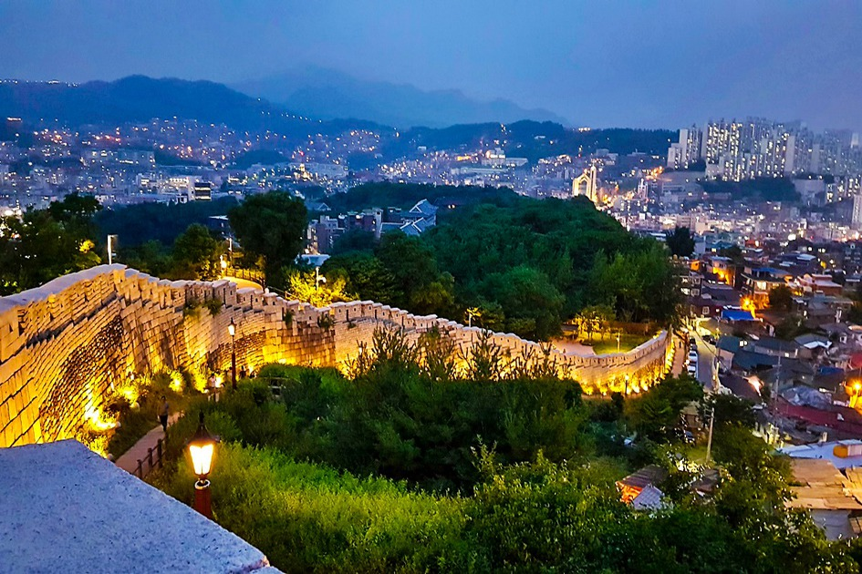
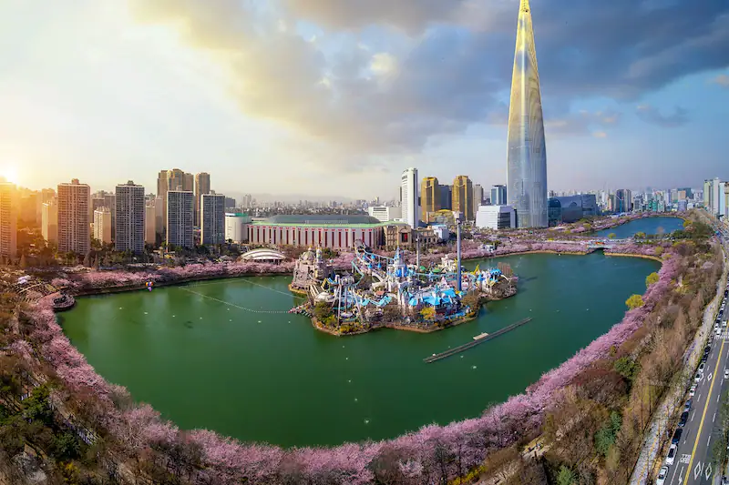

서울의 아름다운 공원들을 소개합니다!

반포 한강공원
반포 한강공원은 한강을 따라 펼쳐진 아름다운 공원으로 유명합니다. 넓은 잔디밭, 자전거 도로, 야외 풋살장, 강변 레스토랑 등 다양한 시설을 갖추고 있어서 많은 사람들이 산책이나 피크닉을 즐기러 찾아옵니다.

낙산 공원
낙산 공원은 서울 북부에 위치한 아름다운 공원으로 유명합니다. 탁 트인 전망과 함께 산책로, 연못, 정자, 꽃길 등이 조성되어 있어서 자연과 조화를 느낄 수 있습니다. 또한, 낙산성과도 인접하여 역사적인 가치도 함께 즐길 수 있습니다.

석촌 호수공원
석촌 호수공원은 강동구에 위치한 아름다운 호수공원으로 유명합니다. 넓은 호수 주변에는 조깅로와 자전거 도로가 있어서 운동을 즐기는 사람들에게 인기가 있습니다. 또한, 호수 주변에는 카페, 레스토랑, 놀이터 등 다양한 시설이 있어서 가족들과 함께 즐거운 시간을 보낼 수 있습니다.